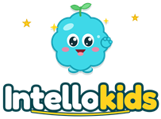

Cartas de memoria
3–10 años
Da la vuelta a las cartas y encuentra las parejas.

Pensar también se entrena. En «Cartas de memoria» los niños buscan las parejas, en «Patrones» descubren la regla y eligen lo que viene después, en «El intruso» averiguan qué elemento no encaja y en «Programa a Brainy» trazan un camino de flechas hasta la estrella. Cada juego empieza poco a poco y se complica a medida que tu hijo sube de nivel.
🛡️ Sin anuncios · Sin chat con desconocidos · Los padres tienen el control
3–10 años
Da la vuelta a las cartas y encuentra las parejas.
3–10 años
Intercambia las piezas para recomponer el dibujo.
3–10 años
Guía a Brainy hasta la estrella en un laberinto nuevo.
5–10 años
Descubre la regla y elige lo que viene después.
5–10 años
Encuentra el que no es como los demás.
7–10 años
Traza un camino con flechas para llevar a Brainy hasta la estrella.
Los juegos de lógica entrenan la memoria, la atención y el razonamiento, habilidades que los niños usan en matemáticas, en lectura y para resolver problemas del día a día. Lo mejor son sesiones cortas y regulares.
Sí. «Programa a Brainy» no requiere saber leer ni tener experiencia: los niños eligen flechas para mover a Brainy paso a paso y luego pulsan ¡Vamos! para ver si su plan funciona.
Crea tu cuenta de padre o madre en un minuto. Una sola cuenta para hasta 4 hijos.
Empezar →